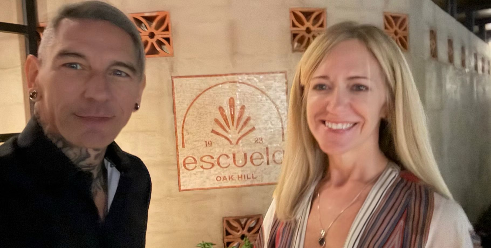

How a football rivalry, a pandemic and two rescue dogs led Wendi and Seven to a new shared hometown
Seven and I met at a Hard Rock Cafe in Stockholm, trash-talking over a football game.
It was Dec. 29, 2019. I was in Sweden on vacation, and a mutual friend brought me to the one spot in town that showed NFL Sunday Ticket for American expats and embassy staff. Seven had lived in Stockholm for 10 years. He was a Dallas kid, and I grew up cheering for Washington. Our teams happened to be playing each other that night, so the NFC East smack talk started before kickoff.
Dallas won 47-16. Seven still brings it up.
He was already planning his move home to Dallas. He arrived at DFW on March 9, 2020. Two days later the world shut down.
So like a lot of “pandemic couples,” we fell for each other over phone calls and Zoom. We didn't see each other in person until the last weekend in June, when Seven flew to visit me in D.C. That weekend it was 90 degrees and the sidewalks were too hot for Lucy, the little white terrier I'd rescued in 2014. Without hesitation, Seven picked her up, tucked her into a backpack and carried her all over the city. She loved him before I did. And he fell head over heels for her, eventually upgrading her name to Lucinda Eleanor Bean.
After a little more than a year of long distance, I sold my rowhouse on Capitol Hill and moved to Texas. We agreed that if I was leaving my hometown behind, he’d do the same, and we’d build a life in a place that was new for both of us, which is what brought us to Austin.
After months of searching and countless rejected bids, a house we had loved and lost came back on the market, and we finally closed on it in October 2021. We scraped the popcorn off the ceilings and replaced the carpets with hardwood before we got to move in at the end of January 2022. We're about to celebrate our five-year Austinversary.
We adopted Baxter once we got to Austin. He came from Addicus' Legacy Dog Rescue. His mother had been pulled from a hoarding situation, and he and his four brothers were born at their foster's home in Georgetown. He was the last one in the litter to be adopted. We drove up, sat in the yard with this fluffy little maniac and let Lucy decide whether he was coming home with us. She agreed, not realizing, I think, what she was in for with a little brother, and we christened him Baxter Benjamin Bub. He's almost 5 now. Lucy is 13 and a half and very much our elder stateswoman.
Seven talks a lot about the duality of his life. By day he runs Seven Spirits, a fractional sales organization that helps craft spirits brands break into the Texas market. The rest of the time he's a professional drummer who still tours the world. Austin has that same split personality, with a robust tech and business culture alongside our legendary music and creative scene. I live my own version of it. I run Authent Co., a brand strategy firm, and I also write the Kindness Crusaders children's book series for young readers ages 4 to 8.
Seven doesn't play locally, and his closest show so far came this fall at the Sick New World festival at Texas Motor Speedway. But as you do in the “live music capital of the world” we love catching other artists. When he's home you'll often find him at Come and Take It Live. I tag along only when friends are on the bill, since it's mostly metal (and my metal fandom stopped with the “hair” variety). Together we love a night at the Moody Theater or the Moody Amphitheater, and are lucky enough to be able to walk to ACL Fest from our neighborhood every October.
Other than music, most of our life revolves around the pups. The Gus Fruh entrance to the Greenbelt is around the corner, so that's our weekend hike. In the evenings, you’ll usually find us at Zilker Park, which is Baxter's favorite place on earth. The dogs ride in a sidecar when we bike, come along when we kayak on Town Lake and each have their own backpack for adventures where being small is a liability. We’ll share all of it with you here in This Side of Austin.
In 2027, our Austin family of four will become seven. Mom, 84, dad, 82, and their pup Cosmo are moving from Maryland to Texas. We're adding some square footage to our house to give them their own space. It’s a 1976 build and had only one owner before us, so we’re building with intention of keeping the mid-century character while adding a little of our own personality to take the house into the next half century.
Austin was new to both of us five years ago. Since then, our friends and neighbors have made it our shared hometown. Soon my parents will call it home too. This column is our way of introducing you to the people (and dogs) and places we love.
If you see a bike near Zilker pulling a sidecar with a patient little white dog trying to enjoy the ride while a black and tan doodle boogies on his hind legs beside her, give them a wave. That's Lucy and Baxter.